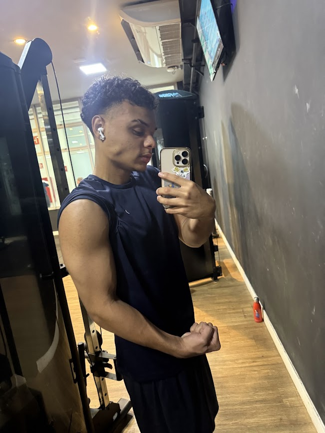

Nasci na cidade de Sorocaba no dia 08/09/2009.
Atualmente sou aluno da escola SESI em Sorocaba e faço curso técnico no SENAI, desenvolvimento de sistemas. Já tive experiências no meio de trabalho,
principalmente com atendimento ao publico na barbearia Afro arts Ipiranga.
Meu objetivo é agregar aos valores da empresa, entregando o meu melhor, sempre buscando o melhor para o local de trabalho e o cescimento no mercado de trabalho.
2025-2026 Afro arts
Experiente com atendimento ao publico, boa comunicação, habilidade básica com vendas
Português(nativo) Inglês(Básico)